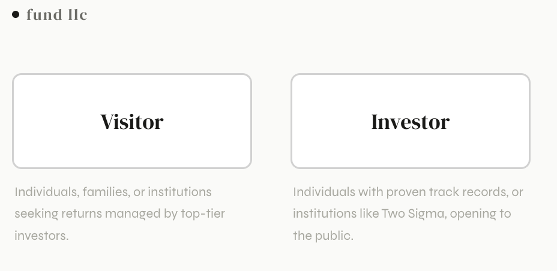
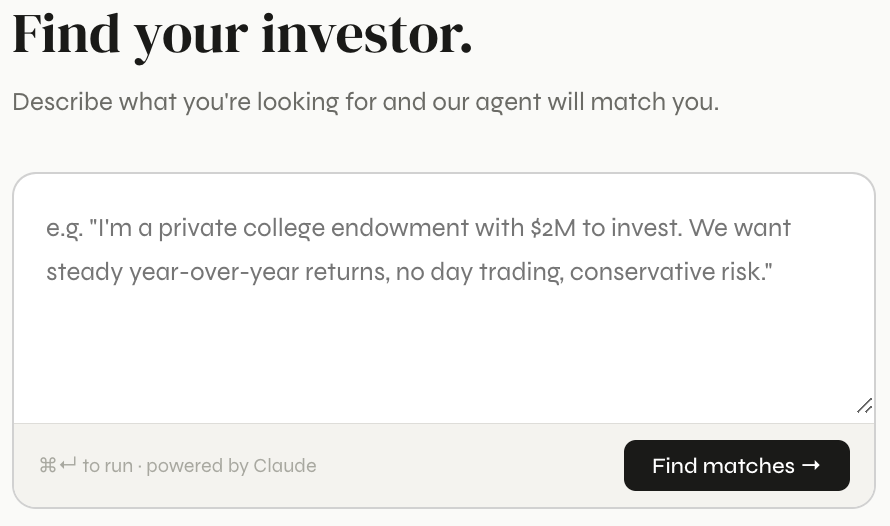
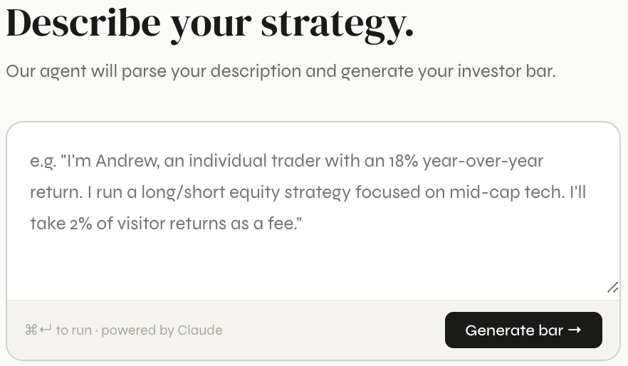
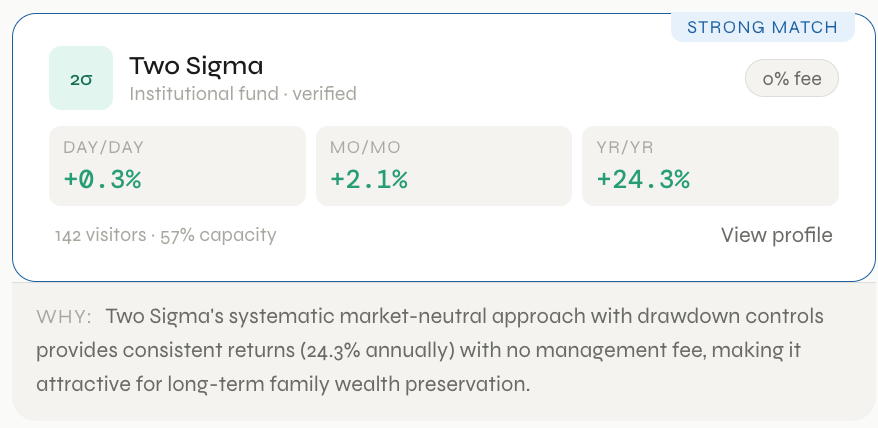
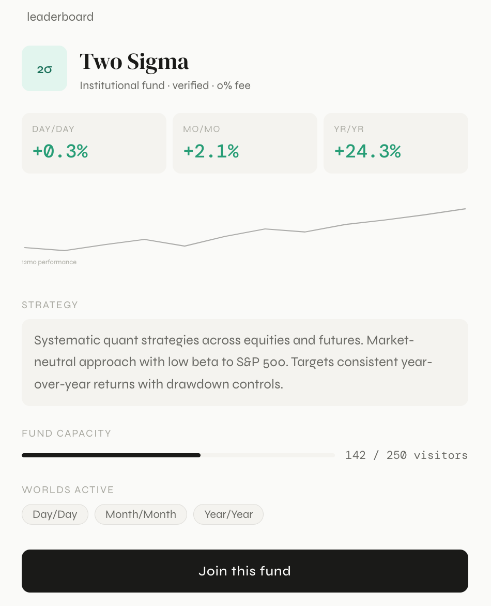

The capital floor, removed.
Portfolio managers set minimums most people can't clear alone. Fund LLC aggregates everyday capital until it does — so investment platforms can put real, professionally run strategies in front of their entire user base, not just the accredited few.
One pool clears the bar. One person alone rarely does.
Successful hedge funds and portfolio managers have historically served high-net-worth individuals almost exclusively — not because everyday capital isn't welcome, but because it arrives too small and too scattered to be worth the paperwork. Fund LLC exists to close that gap from both directions.
For everyday investors
Your capital pools with everyone else's in a world until, together, it clears the minimum a portfolio manager sets. You get in at a scale you could never reach alone — the platform handles the aggregation, you just show up.
For proven investors
A strong track record used to mean founding a fund before you could take on outside capital. On Fund LLC, a successful investor can onboard capital, and interested investors, in direct proportion to that record — no fund required.
Every world is a different reason to say yes.
Fund LLC doesn't sort capital by asset class first — it sorts by why someone is willing to put money in and what they need back, and when. Each world is its own pool, its own clock, its own community of investors and managers.
Quick returns, for the risk you're willing to take on trust
Day trading draws people in on speed alone. Fund LLC adds a reason to trust it: back a manager once their track record has already proven itself, not before.
Returns you can plan a life around
For the investor thinking about rent, not retirement. Once a manager's record earns your confidence, Month/Month turns that confidence into income you can count on showing up.
An easy, reliable way in for capital that usually sits still
Built for larger institutions that don't traditionally invest their capital at all. Low-touch, dependable, and designed to be the simplest "yes" they've been offered.
Built to plug in. Built to stand alone.
The aggregated capital system is the product — whether it reaches people through a platform's existing user base, or directly.
Partner with a platform
Investment platforms like Kalshi and Robinhood already have the users; they don't have an easy way to hand those users' pooled capital to a real portfolio manager. Fund LLC is that layer — a plug-in aggregated capital system that lets a platform put professionally run strategies in front of everyone it serves, not just accredited accounts.
Talk to us about partnering →Invest directly, today
If a platform partnership isn't in place yet, the mission doesn't wait. Fund LLC works standalone: join a world, pool capital alongside other everyday investors, and get access to strategies that have historically been reserved for high-net-worth clients of successful hedge funds.
Join a world →One cycle, start to finish.
Pick a world
Choose the cadence that matches your capital or your strategy: Day, Month, or Year.
Capital pools
Allocators commit into the world, and strategists get a funded book to run against.
The clock runs
Positions play out on the world's cadence, tracked openly for every allocator the whole time.
Settle and repeat
Returns distribute on schedule, and capital rolls into the next cycle — or moves to a different world entirely.
Two agents do the matching so no one has to read a prospectus.
Investors describe their track record in plain English and get a fund profile back. Visitors describe what they want and get matched to a fund, with the reasoning shown, not hidden.

Visitors back a fund managed by a proven investor. Investors with a track record open their fund to the public.

Describe what you're looking for in plain language — the agent matches you to a fund, not the other way around.

A proven trader describes their strategy and track record once. The agent turns it into a fund profile automatically.

Every match comes with a plain-language "why" — not just a score.

Every fund's Day, Month, and Year performance, strategy, and remaining capacity, in one place — with a single "join this fund" step.